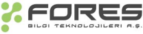
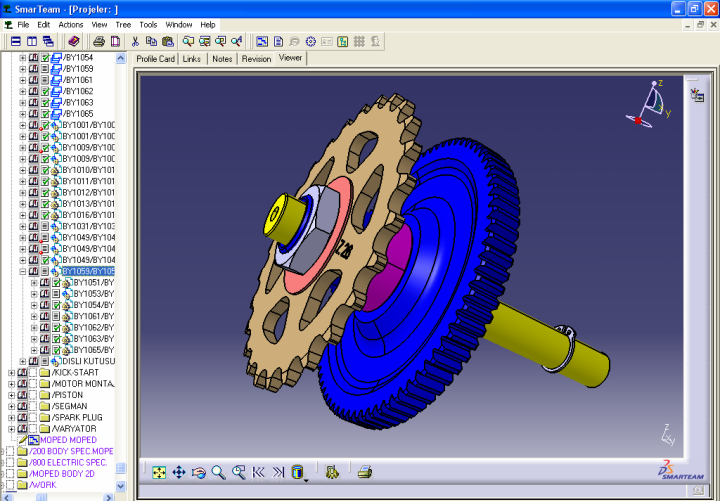
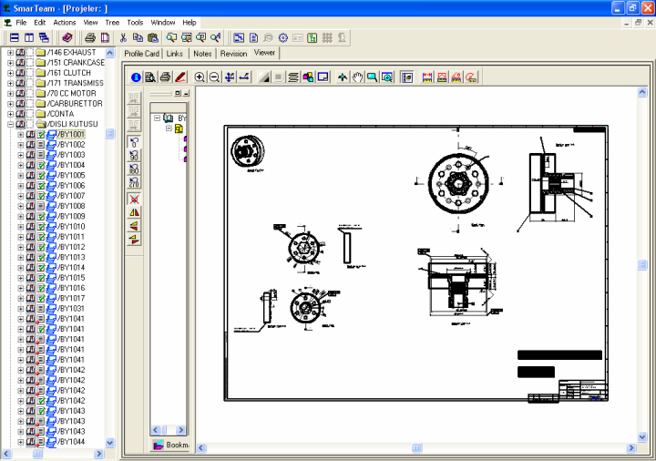
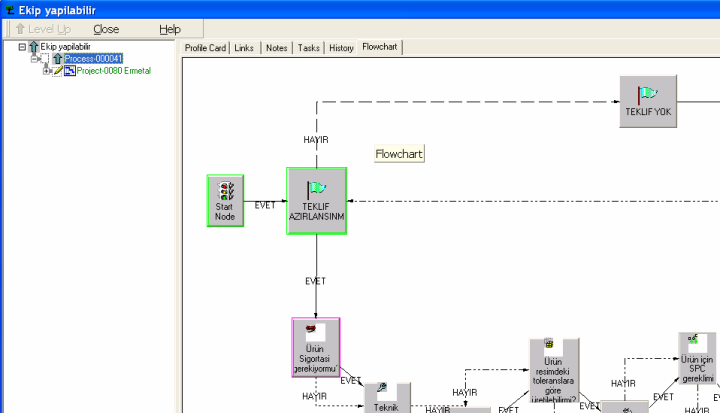
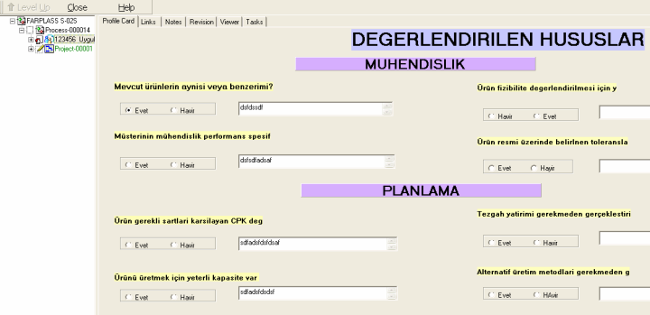

|
Verilerin Oluþturulmasý ve kullanýlmasýndaki hýzlý geliþim her kurumu veri yýðýnýyla uðraþmak zorunda býrakýyor. Veriler ürün imalatý sýrasýnda satýþ, tasarým/geliþtirme, tedarik, üretim, montaj ve kalite yönetiminde ortaya çýkar ve bu veriler revizyonlara uðrar.
PLM, bir ürünü Tasarlamaya baþladýðýnýzda prototip, üretim servis ve ölene kadar olan sürede bu süreçleri takip ve bu süreçlerde oluþan bütün verileri yönetmek ve kontrol etmeyi hedefliyor. Smarteam Ne üretiyor olursanýz olun o ürünle ilgili bütün verilerin revizyonlarý ile belli bir süreç dahilinde kontrol yönetim ve güvenliðini saðlayan bir Ürün Veri Yönetimi (PDM Product Data Management) çözümüdür.
Fores þirketi PLM ile þunlarý hedefliyor.
- Ürünün bütün aþamalarýnda her türlü verileri kontrol altýna alabilmek ve paylaþým saðlayabilmek.
- Oluþabilecek hatalarý en baþýndan görebilmek.
- Süreçleri entegre etmek
- Hem þirket içi tasarýmcýlarla hem de tedarikçilerle ortak paylaþým saðlayabilmek.
- Verilerin güvenliðini saðlayabilmek.
- Doðru veriye ve doðru revizyona ulaþým
- Veri tekrarýný engellemek ve ortak parça kullanýmýný saðlamak.
- Verileri süreçlerle beraber takip etme olanaðý.
- Daha hýzlý pazara çýkýþ.
Tüm bu hedefler sonucunda uygulama için süreçler analiz edilir. Alýþkýn olunan süreçler deðiþtirilmeden ürünler müþteriye uyarlanýr. Uyarlama esnasýnda her konunun ayrý uzmanlarý mevcuttur.
Verilere bakacak olursak
Burada Ürün ile alakalý veriler Dokümanlar, Þartnameler Malzeme listeleri, Taranmýþ resimler, Montaj katý modeller, Formlar, Çizimler, Kalite dokümanlarý, Resimler, Teknik Resimler, Kaðýt evraklar gibi veriler olabilir.
Bu kadar çok veriyi ve bu verilerin revizyonlarýný Windows ile yönetmeye çalýþtýðýmýzda oluþturacaðýmýz ürüne odaklanmak yerine bu veriler ile ilgili iþlemlere odaklanabiliyoruz
Ürün oluþtururken kullanmýþ olduðumuz farklý programlar ve bu programlarýn verilerinin yönetilmesi gerekir. Smarteam kullanýlan programlar ile entegre çalýþýr. Yani o ortamdan çýkmadan verilerinizi Smarteam'e kaydedebilirsiniz bu programlara örnek:
CATIA, UG, I-DEAS, Pro/ENGINEER, AutoCAD, Mechanical Desktop, SolidWorks, SolidEdge, Cadkey, Cimatron Excel Word vb.'dir.
Bu programlar yüklü olmayan kiþiler tarafýndan da view edilebilir.

Ürün meydana gelirken birçok süreçten geçer. Sürecin her aþamasýnda deðiþik veriler meydana gelir. Her aþamadaki veriler farklý departmanlar tarafýndan oluþturulur. Ýþte bu aþamada Smarteam ürünün meydana geliþ aþamasýndaki bütün verileri yönetir.

Buraya kadar genel veri yönetim yapýsýndan bahsettik Smarteam'deki temel olan bu veri yönetimi üzerine iþ akýþlarýný da yönetir. Kullanýcýnýn veya yöneticinin kendi ortamýna uygun olarak tasarladýðý iþ akýþý diyagramlarýnýn yetkilere göre kullanýcýlar tarafýndan kullanýlmasýný saðlar. En büyük avantaj veriler Smarteam içerisinde olduðu için süreç istenilen veri ile beraber yürür. Yani size bir iþ geldiði zaman bu iþ ile beraber bütün verileri görme þansýnýz olur. Mesela 3D 2D yazýþmalar formlar gibi. Veri kaynaðý tek olup
gönderilen sadece verinin linkidir.

Smarteam'e kaydedilen veriler proje bazlý yönetilebilir. Böylelikle projenin bütünü süreç ile birlikte görebiliriz.

Aþaðýda, Smarteam ihtiyacýnýn neden doðduðu ve hangi problemlere cevap verebildiði maddeler halinde anlatýlmýþtýr:
- Kiþiye baðlý yapý içinde çalýþmak ve hatalara açýk olmak.
- Veri kayýplarýnýn sýkça yaþanmasý.
- Özellikle artan resim adetlerinin yaratýlmasý, olasý deðiþikliklerin yapýlmasý ve saklanmasý aþamasýnda yaþanan sorunlar.
- Güvenilir ortamda çalýþmadan uzaklaþýlmasý.
- Uygulamada büyük mertebede yaþanan yavaþlýk.
- Revizyon takibinin manüel ortamlarda yapýlmasý.
- Sadece çizim deðil, proje bazlý belge, doküman ve çizimleri ile projeyi uçtan uca izleyememek.
- Çizimlerin çoklu ortamda (diðer bölümlerle) paylaþýlamamasý, bunun getirdiði çözüme ulaþmadaki yavaþlýk.
- Güncel ve "DOÐRU" veriye tek merkezden eriþme ihtiyacý.
- Bütün dokümanlarda Revizyon takibi yapýlabilecek.
- Ayný koddan birçok resim oluþmayacak.
- Product ve partlar farklý "folder"lara saklanamayacak, dolayýsý ile çizime saðlýklý eriþim saðlanacak.
- Veriye hýzlý ve güvenilir eriþim saðlanacak.
- Belirlenen kullanýcýlar yetkiler çerçevesinde yayýnlanmýþ dokümanlarý ve 3D'leri görüntülebilecek, deðiþtiremeyecekler. (Satýn alma, Kalite veya diðer..)
- Bir Çok CAD ve Office yazýlýmýyla entegre çalýþabilme (MultiCAD desteði) .
- Projeler çizim ve doküman bazýnda izlenecek. (örnek: projenin resmindenàyedek parça kataloguna kadar).
- Dijital arþiv oluþturulabilecek, kaðýt ortamý kaldýrýlacak.
- Departmanlar arasý iþbirliði oluþturmak.
- Yeni tasarým elemanlarýnýn adaptasyonunu hýzlandýrmak.
- Yöneticilerin proje takibini daha etkin hale getirmek.
- Entegre modüllerin sayesinde ileriki aþamalarda yeni parça yayýn ve deðiþikliklerin dijital ortamda yapýlabilinmesi (workflow).
- Ýleride eklenebilecek modülle internet üzerinden Yan sanayinin de izin verilecek dokümanlara ulaþým saðlanabilinmesi.
- Yayýnlarý elektronik ortamda yapabilmek.
- Projenin bütününü görme ihtiyacý.
- Detaylý yetkilendirme ile proje ve veri güvenliði ihtiyacý.
- Paralel yapýlabilecek iþler, paralel yürüyebilecek süreçlerden dolayý, mühendislerin birbirlerinin iþlerini gereksiz olarak beklemelerinin önlenmesi.
Ýrtibat:
Serdar Aktaþ
PLM Uzmaný
Fores Bilgi Teknolojileri A.Þ.
Beylerbeyi Üsküdar Ýstanbul
Tel: (216) 318 70 10
www.for-es.com.tr |